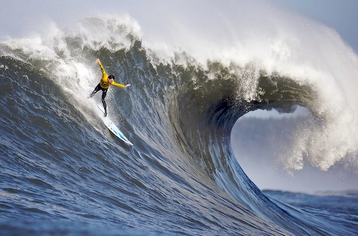

Images

What kind of photos are good to encode using JPEG? Real world pictures
What kind of photos are good to encode using GIF? Animation, Work best when our pictures dont use a lot of colors. Logos
What is unique about the PNG format? It is also good for logos. It has transparency. We can have pixels that can see through.
How do you resize your photo to the size it should be displayed? If we use Mac, we can use the preview app and go to tools to readjust the image we want to display in our Web Page.
Why should you resize photos using photo editing software instead of resizing it using CSS? We do not want to consume a lot of data, batery or money of the people that are watcing our web page, so by resizing the images in preview, we can save data, memory or even money.
What is CSS validation?
Favicon (x icon editor)